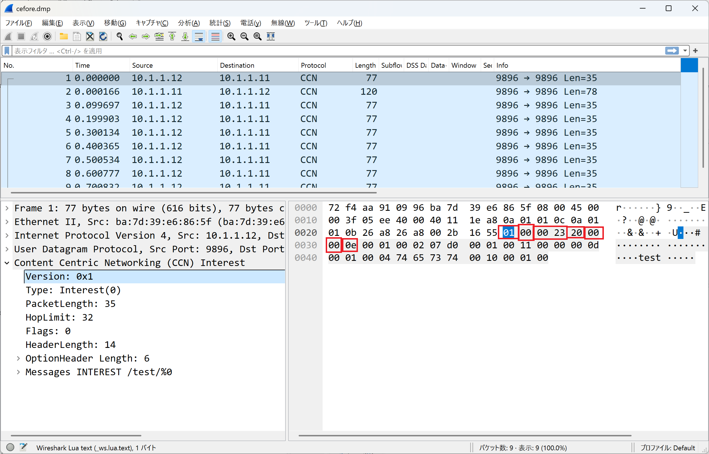
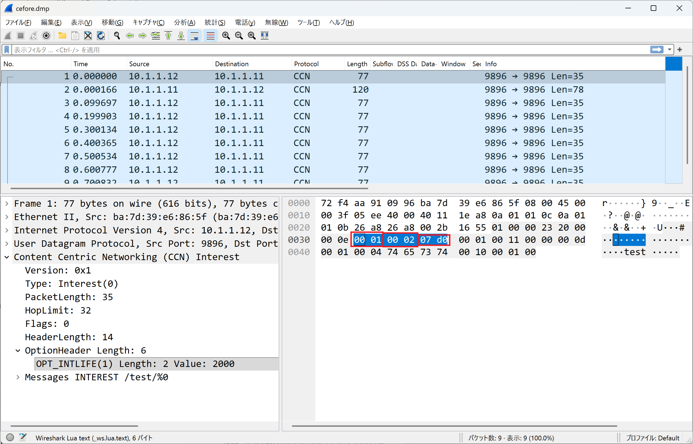
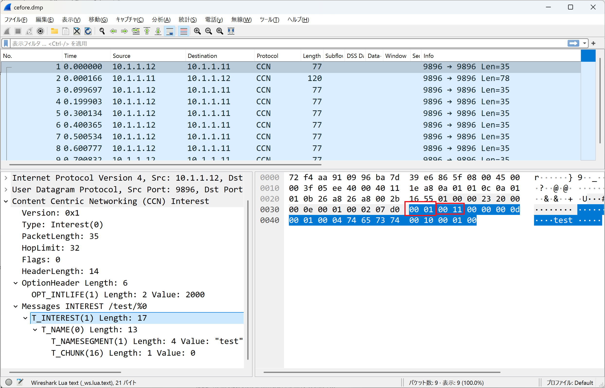
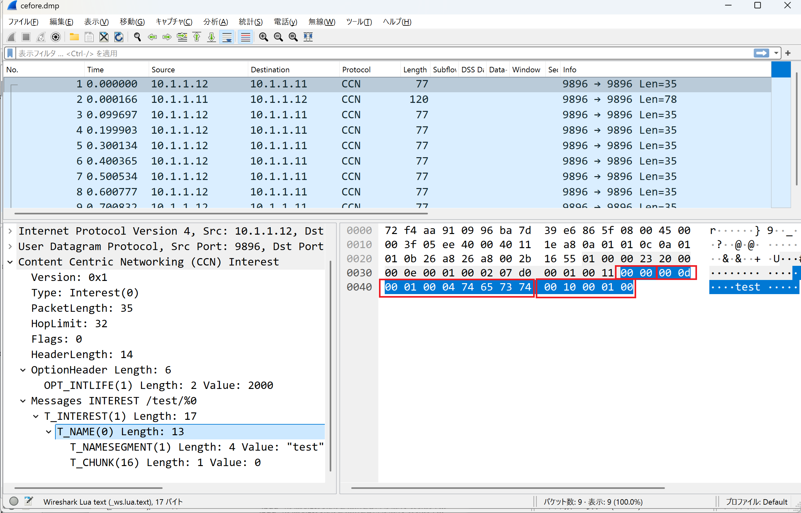

はじめに
ここではCCNxパケットを実際に飛ばして、様子を観察していきたいと思います。
その1でインストールしたCeforeをもう1台のUbuntuの動くPCにインストールできる人はそれで大丈夫です。WindowsやMacが1台しかないという人はDockerの環境で試してもらうのがいいでしょう。
Docker環境の構築
Docker Desktopをインストールしてdockerコマンドで環境を構築する例を示します。dockerコマンドが実行可能になった前提で進めていきます。
icn-docker-sample.zipファイルを展開し、Dockerfileとdocker-compose.ymlを置いたディレクトリで以下のコマンドを実行します：
docker compose up -d端末をひとつ使って以下のコマンドを実行すると、コンテナcefore-node1でコマンド実行ができます：
docker exec -it cefore-node1 bashもうひとつ端末を使って以下のコマンドを実行することで、もう1つのコンテナcefore-node2でコマンド実行ができます：
docker exec -it cefore-node2 bashこれらの2つのコンテナではすでにCefore（バージョン0.10.0g）が導入済みです。cefnetdstartでcefnetdを起動し、cefstatusで起動中であることを確認しておきましょう。両方のコンテナで実行しておきます。
基本的な通信テスト
Node1でのファイル登録
それでは「その1」でやったように、cefore-node1でcefputfileしてみましょう。
cefputfile ccnx:/test -f test.txtcefore-node1のCS_MODEが1以上であればこのデータはキャッシュされます。
cefore@cefore-node1:~$ cefputfile ccnx:/test -f test.txt [cefputfile] Start [cefputfile] Parsing parameters ... OK [cefputfile] Init Cefore Client package ... OK [cefputfile] Conversion from URI into Name ... OK [cefputfile] Checking the input file ... OK [cefputfile] Connect to cefnetd ... OK [cefputfile] URI = ccnx:/test [cefputfile] File = test.txt [cefputfile] Rate = 5.000 Mbps [cefputfile] Block Size = 1024 Bytes [cefputfile] Cache Time = 300 sec [cefputfile] Expiration = 3600 sec [cefputfile] Start creating Content Objects [cefputfile] Unconnect to cefnetd ... OK [cefputfile] Terminate [cefputfile] Tx Frames = 1 [cefputfile] Tx Bytes = 16 [cefputfile] Duration = 0.004 sec [cefputfile] Throughput = 39372 bps
Node2からのアクセス試行（失敗例）
次にcefore-node2からcefore-node1にアクセスして、このccnx:/testを取得してみましょう。
cefgetfile ccnx:/test -f output.datこのコマンドは自身のホストcefore-node2で動いているcefore (cefnetd) にinterestを投げるもので、このノードにはないコンテンツですのでceforeはinterestを転送しようとするのですが、転送のための参照テーブル (Forwarding Interest Base: FIB) にこのCCNx URIが登録されていません。したがって取得は失敗します。
cefore@cefore-node2:~$ cefgetfile ccnx:/test -f output.dat [cefgetfile] Start [cefgetfile] Parsing parameters ... OK [cefgetfile] Init Cefore Client package ... OK [cefgetfile] Conversion from URI into Name ... OK [cefgetfile] Checking the output file ... OK [cefgetfile] Connect to cefnetd ... OK [cefgetfile] URI=ccnx:/test [cefgetfile] Start sending Interests [cefgetfile] Suspended to retrieve the content because the number of Interest retransmission has reached its limit, 5. [cefgetfile] Unconnect to cefnetd ... OK [cefgetfile] Terminate [cefgetfile] Rx Frames (All) = 0 [cefgetfile] Rx Frames (ContentObject) = 0 [cefgetfile] Received frame ... NG [cefgetfile] Could not receive anything
このとき、cefstatusを実行してみると、FIBにエントリがないことがわかります。
cefore@cefore-node2:~$ cefstatus CCNx Version : 1 Port : 9896 Rx Interest : 0 (RGL[0], SYM[0], SEL[0]) Tx Interest : 0 (RGL[0], SYM[0], SEL[0]) Rx ContentObject : 0 Tx ContentObject : 0 Cache Mode : Localcache FWD Strategy : default Faces : 6 faceid = 4 : IPv4 Listen face (udp) faceid = 0 : Local face faceid = 16 : Local face faceid = 5 : IPv6 Listen face (udp) faceid = 6 : IPv4 Listen face (tcp) faceid = 7 : IPv6 Listen face (tcp) FIB(App) : Entry is empty FIB : Entry is empty PIT(App) : Entry is empty PIT : Entry is empty
ルーティング設定
FIBにinterestの転送先としてcefore-node1を登録するにはどうしたらいいのでしょうか。interestをルーティングするという意味でcefrouteというコマンドが用意されています。cefore-node1のIPアドレスが10.1.1.11であれば以下のように実行します。
cefroute add ccnx:/test udp 10.1.1.11 9896確かにFIBができたことはcefstatusコマンドでも確認できます。
cefore@cefore-node2:~$ cefstatus
CCNx Version : 1
Port : 9896
Rx Interest : 56 (RGL[56], SYM[0], SEL[0])
Tx Interest : 8 (RGL[8], SYM[0], SEL[0])
Rx ContentObject : 1
Tx ContentObject : 1
Cache Mode : Localcache
FWD Strategy : default
Faces : 8
faceid = 19 : address = 10.1.1.11:9896 (udp)
faceid = 4 : IPv4 Listen face (udp)
faceid = 0 : Local face
faceid = 22 : Local face
faceid = 20 : address = 0.0.38.168:9896 (udp)
faceid = 5 : IPv6 Listen face (udp)
faceid = 6 : IPv4 Listen face (tcp)
faceid = 7 : IPv6 Listen face (tcp)
FIB(App) :
Entry is empty
FIB : 1
ccnx:/
Faces : 19 (-s-) RtCost=0
20 (-s-) RtCost=0
PIT(App) :
Entry is empty
PIT :
Entry is empty
成功例
それではcefgetfileを再度実行してみましょう。今度はちゃんと取得できるはずです。
cefore@cefore-node2:~$ cefgetfile ccnx:/test -f output.dat [cefgetfile] Start [cefgetfile] Parsing parameters ... OK [cefgetfile] Init Cefore Client package ... OK [cefgetfile] Conversion from URI into Name ... OK [cefgetfile] Checking the output file ... OK [cefgetfile] Connect to cefnetd ... OK [cefgetfile] URI=ccnx:/test [cefgetfile] Start sending Interests [cefgetfile] Completed to get all the chunks. [cefgetfile] Unconnect to cefnetd ... OK [cefgetfile] Terminate [cefgetfile] Rx Frames (All) = 1 [cefgetfile] Rx Frames (ContentObject) = 1 [cefgetfile] Rx Bytes (All) = 32 [cefgetfile] Rx Bytes (ContentObject) = 16 [cefgetfile] Duration = 0.000 sec [cefgetfile] Jitter (Ave) = 0 us [cefgetfile] Jitter (Max) = 0 us [cefgetfile] Jitter (Var) = 0 us
パケット解析
このときのCCNxパケットのやりとりをWiresharkでキャプチャしてみましょう。
tcpdumpがなければsudo apt install tcpdumpで導入し、tcpdump -i eth0 -w cefore.dmp udp port 9896のようにキャプチャすることを想定しています。
githubのceforeのリポジトリからLUAファイルをもってきてWiresharkに登録すると、CCNxパケットが解析できて便利です。CeforeのCCNx実装はIPのオーバーレイですので、UDPパケットの中にCCNxパケットがおさまっている形になっています。
Fixed Headerの解析
以下のRFC8609の記述と対応させると、8バイトのfixed header（固定ヘッダ）部分は以下の値であることがわかります。※値は特に断らない限り、10進数に直して示します
- Version = 1
- Packet Type = PT_INTEREST (1)
- PacketLength = 35
- HopLimit = 32
- Reserved = 0
- Flags = 0
- HeaderLength = 14
Fixed Header Format
1 2 3
0 1 2 3 4 5 6 7 8 9 0 1 2 3 4 5 6 7 8 9 0 1 2 3 4 5 6 7 8 9 0 1
+---------------+---------------+---------------+---------------+
| Version | PT_INTEREST | PacketLength |
+---------------+---------------+---------------+---------------+
| HopLimit | Reserved | Flags | HeaderLength |
+---------------+---------------+---------------+---------------+
固定ヘッダが8バイトでヘッダ長が14バイトであることからオプションヘッダが6バイト入っていることがわかります。
Option Headerの解析
オプションヘッダ（Hop-by-Hop TLV headers）は以下との対応で次の値となります：
- option type = T_INTLIFE (1)
- Length = 2 [bytes]
- Lifetime = 2000 (07 d0 = 256*7 + 13*16 = 2000) [ms]
このinterestの有効期間は2秒間ですね。
Option Header Format
1 2 3
0 1 2 3 4 5 6 7 8 9 0 1 2 3 4 5 6 7 8 9 0 1 2 3 4 5 6 7 8 9 0 1
+---------------+---------------+---------------+---------------+
| T_INTLIFE | Length |
+---------------+---------------+---------------+---------------+
/ /
/ Lifetime (Length octets) /
/ /
+---------------+---------------+---------------+---------------+
CCNx Message TLVの解析
ヘッダが終わればあとはCCNx Message TLVになります。以下との対応で次の値であることがわかります：
- MessageType = T_INTEREST (1)
- MessageLength = 17
Message TLV Format
1 2 3
0 1 2 3 4 5 6 7 8 9 0 1 2 3 4 5 6 7 8 9 0 1 2 3 4 5 6 7 8 9 0 1
+---------------+---------------+---------------+---------------+
| MessageType | MessageLength |
+---------------+---------------+---------------+---------------+
/ Name TLV (Type = T_NAME) /
+---------------+---------------+---------------+---------------+
/ Optional Message TLVs (Various Types) /
+---------------+---------------+---------------+---------------+
/ Optional Payload TLV (Type = T_PAYLOAD) /
+---------------+---------------+---------------+---------------+
Name TLVの解析
メッセージとしてはName TLVが続いていることがわかります。中にはName segment TLVsが含まれることになります。以下と対応づけると次の値になっています：
- Type = T_NAME (0)
- Length = 13 (Name TLV 8バイトとChunk TLV 5バイト)
Name TLV Format
1 2 3
0 1 2 3 4 5 6 7 8 9 0 1 2 3 4 5 6 7 8 9 0 1 2 3 4 5 6 7 8 9 0 1
+---------------+---------------+---------------+---------------+
| T_NAME | Length |
+---------------+---------------+---------------+---------------+
/ Name segment TLVs /
+---------------+---------------+---------------+---------------+
Name segment TLVをみていくと、以下に対応して次の値が指定されていることがわかります：
- Type = T_NAME_SEGMENT (1)
- Length = 4
- Value = "test" (0x74 0x65 0x73 0x74 の4バイト)
これらのName segmentを "/"でつなぎ、先頭にccnx:/をつけたものがURIですので、ここではccnx:/testが指定されています。
Name Segment Example
1 2 3 0 1 2 3 4 5 6 7 8 9 0 1 2 3 4 5 6 7 8 9 0 1 2 3 4 5 6 7 8 9 0 1 +---------------+---------------+---------------+---------------+ | (T_NAME) | 0x14 (20) | +---------------+---------------+---------------+---------------+ | (T_NAME_SEGMENT) | 0x03 (3) | +---------------+---------------+---------------+---------------+ | f o o |(T_NAME_SEGMENT) +---------------+---------------+---------------+---------------+ | | 0x03 (3) | b | +---------------+---------------+---------------+---------------+ | a r | (T_NAME_SEGMENT) | +---------------+---------------+---------------+---------------+ | 0x02 (2) | h | i | +---------------+---------------+---------------+---------------+
チャンク番号の解析
最後にチャンク番号がついていますが、Cefore0.10.0gは既述のように期限切れのinternet draft（draft-mosko-icnrg-ccnxchunking-02）の仕様に沿っています。
以下との対応でみると次の値であることがわかります：
- Type = T_CHUNK (16)
- Length = 1
- Number = 0
Chunk Number Format
1 2 3
0 1 2 3 4 5 6 7 8 9 0 1 2 3 4 5 6 7 8 9 0 1 2 3 4 5 6 7 8 9 0 1
+---------------+---------------+---------------+--------------+
| T_CHUNK | Length |
+---------------+---------------+---------------+--------------+
| variable length integer /
+---------------+---------------+
まとめ
ここまででCefore 0.10.0gでやりとりされるInterestパケットのフォーマットがわかってきたことと思います。（その3）ではContent Objectパケットの中身をみていきたいと思います。